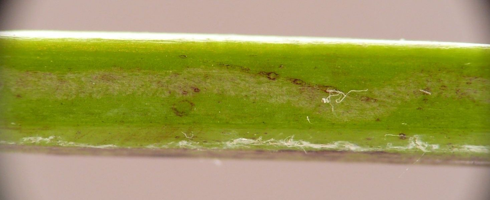
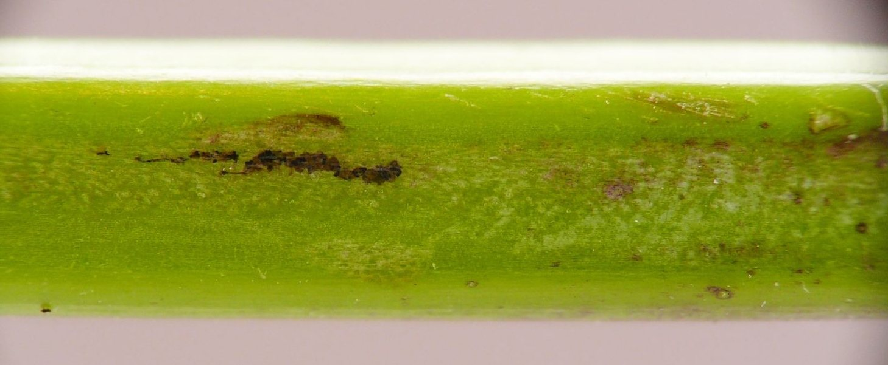
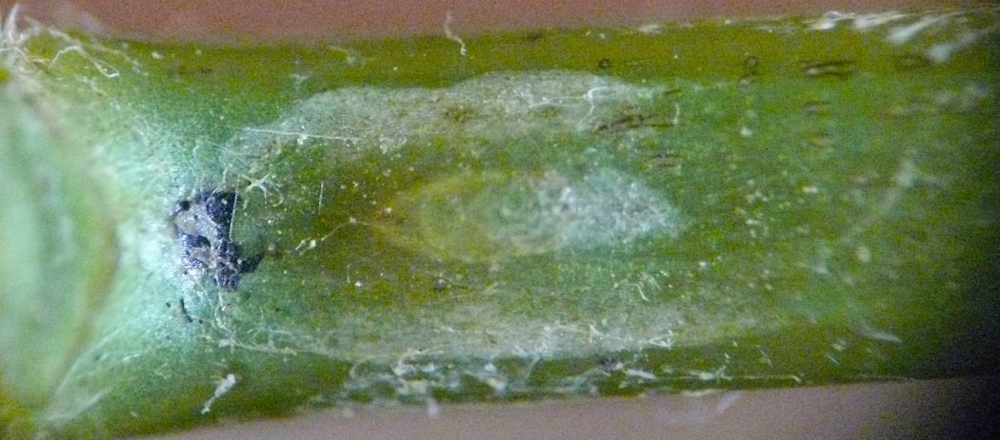
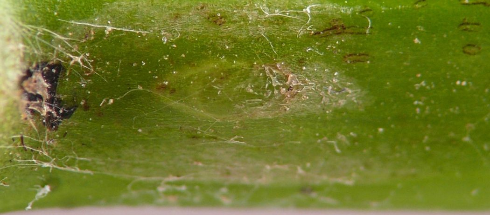
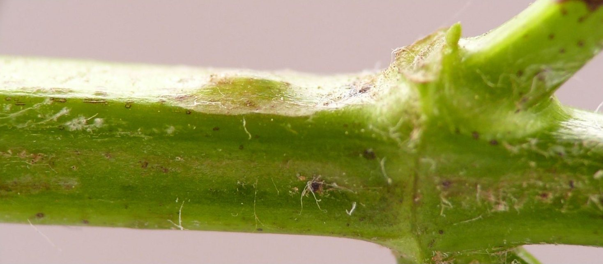
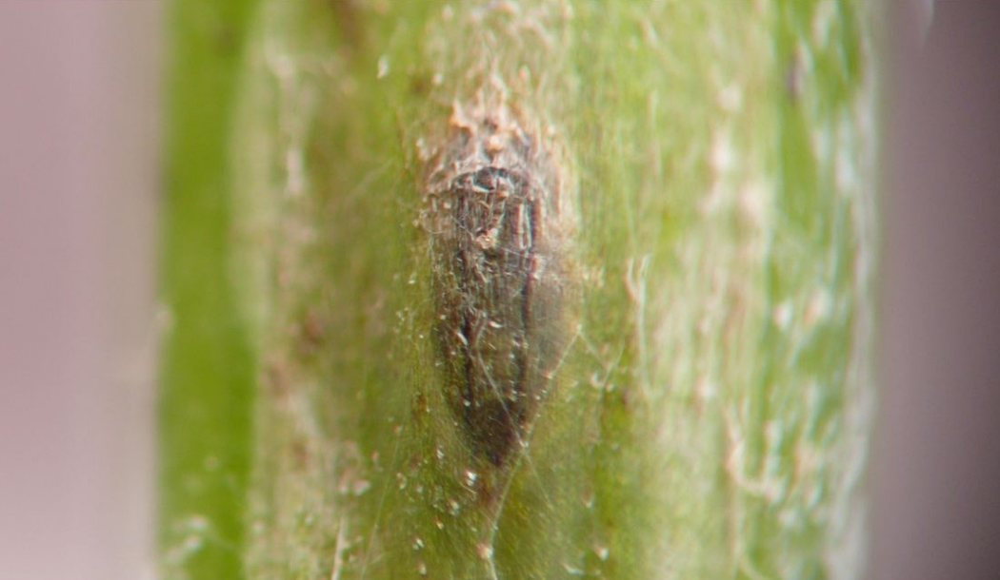

Stem miner (Diptera: Agromyzidae) in Monarda
| Record no.: | 0687 |
|---|---|
| Feeding guild: | Stem miner |
| Taxonomy: | Diptera: Agromyzidae: Ophiomyia sp. |
| Stages observed: | trace, puparium |
| Distribution observed: | IA |
| Hosts in Monarda: | M. fistulosa (bee balm, wild bergamot) |
I found a recently formed puparium of this fly in a stem mine on Monarda fistulosa on June 29, 2024. The mine was very difficult to discern overall, but in places it was visible as a faint whitish linear track. One photo shows a narrow strip of black frass deposited along one edge of the mine, but overall such strips of frass seemed to be very sparsely distributed. At a node in the stem, the mature larva terminated the mine by depositing a large lump of black frass, then pupated one or two millimeters below this frass lump, with the anterior end of the puparium facing downward and away from the node, and the posterior end facing the frass lump. The puparium eventually turned dark gray and a parasitoid wasp emerged from it on July 11.

 Prev
Prev
{kind=link}
{kind=link}

{kind=link}

{kind=link}

{kind=link}

{kind=link}

Page created: March 26, 2026. Last update: none